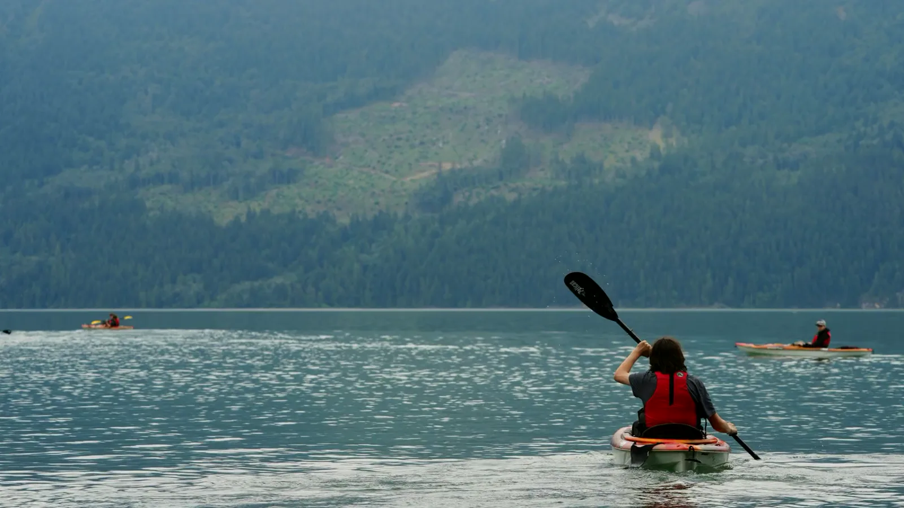
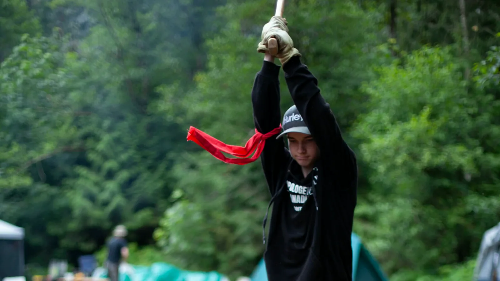
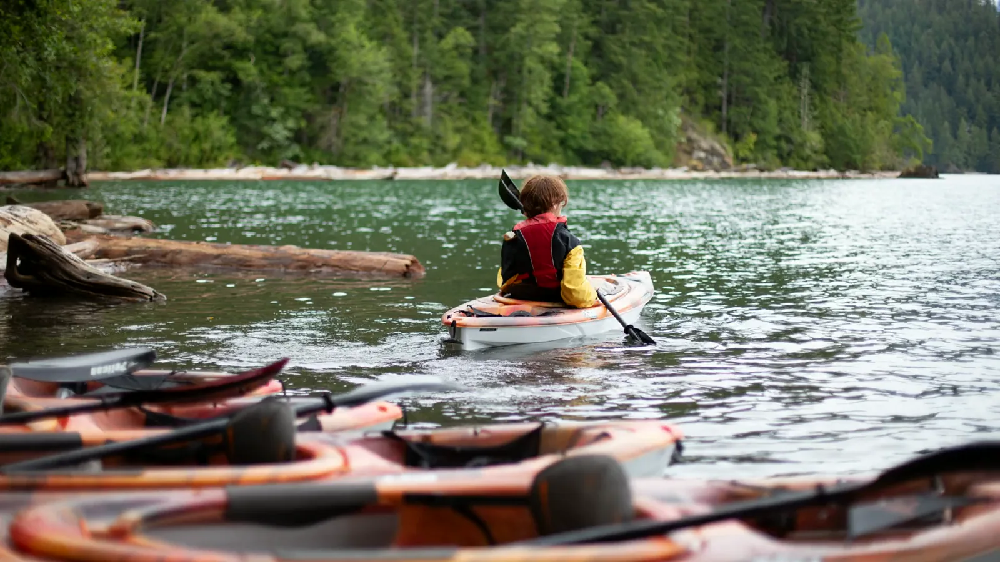
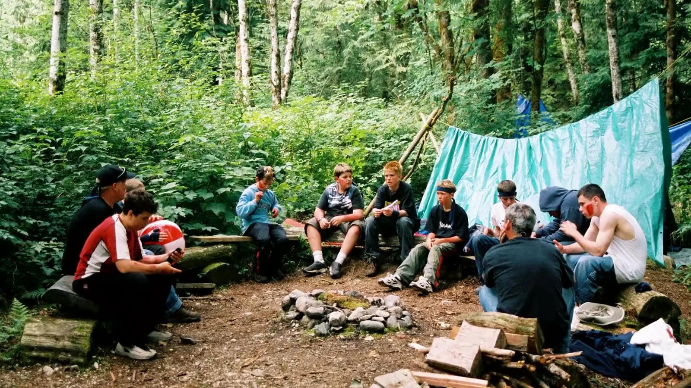
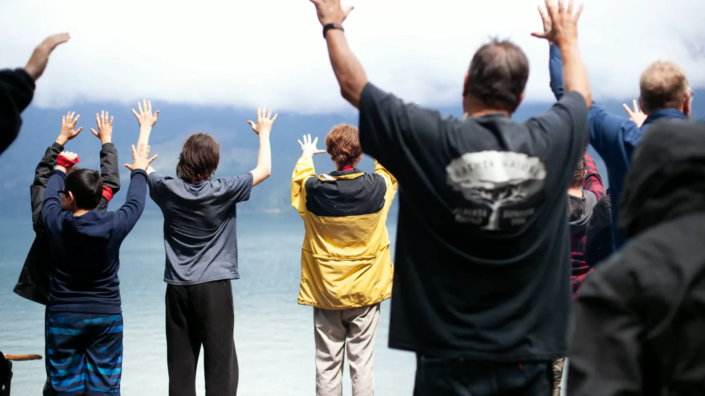
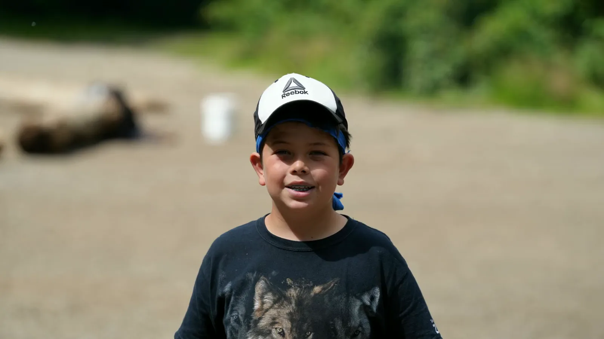

Young Men's Adventure Weekend · September 11–13, 2026 · Squamish, BCYMAW · Sept 11–13, 2026 · Squamish
The weekend he needs right now.
Three days of fire, water and real work in the Squamish wilderness, with men who have shown up for young men since 1990.
Register NowHis hands learn what they're for.
Axe, fire, knots, shelter. Real tools, real weight, real trust.
The Quests ask for more than he thinks he has.
Stations that test mind and body, built so a young man can win them honestly.
Saturday night, the circle.
No phones. No performing. Since 1990, young men have sat in this circle and said things out loud for the first time.


Sunday, every hand goes up.
The young man who steps off the bus Sunday is not the one you dropped off Friday.
September 11–13, 2026 · Squamish, BC · Young Men 12–17 · $320Sept 11–13, 2026 · Squamish · $320
His seat by the fire is waiting.
Register NowPickups in Burnaby, Langley and Squamish. Financial assistance is available to every family that asks.
info@ymaw.com Instagram Facebook Production Team Donate © 2026 Young Men's Adventure Weekend Society of BC